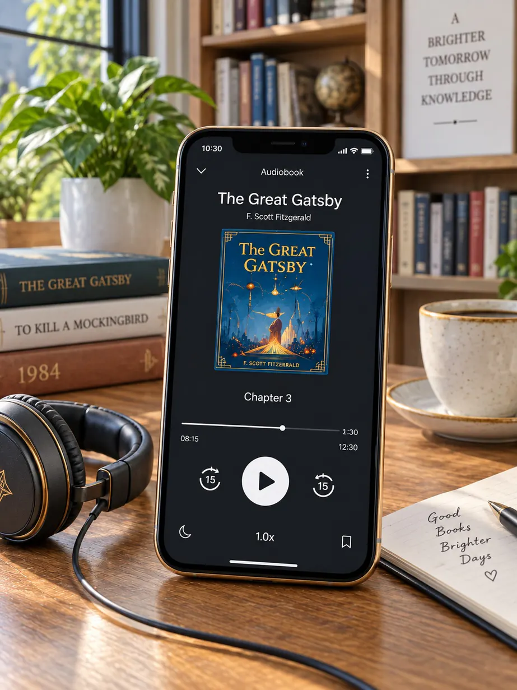
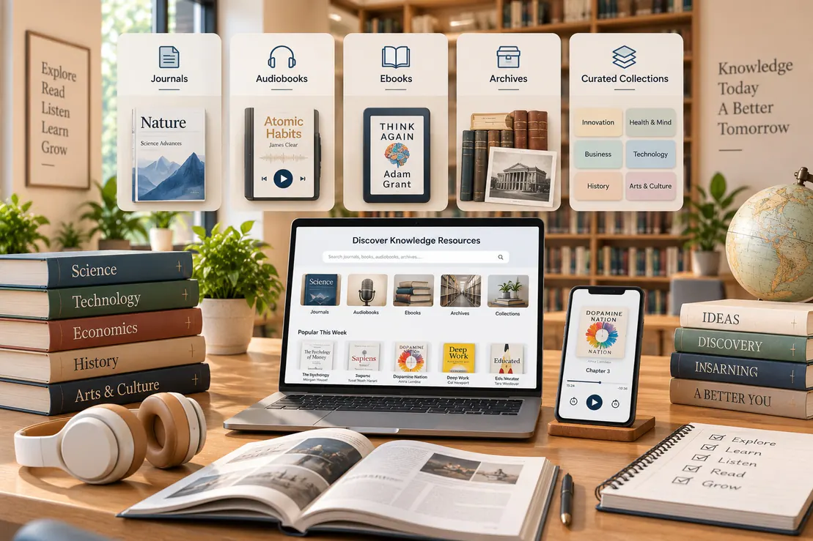

⌕
01
How to Build a Reading Habit
Start small, choose a regular time and keep a simple list of what you finish.
Learn more →DIGITAL KNOWLEDGE, BEAUTIFULLY ORGANISED
Practical guides, new-book highlights, research tips and thoughtful stories from the STACKLY reading community.
EXPLORE & DISCOVER
Read practical articles, book recommendations, learning guides, platform updates and stories from the STACKLY community.
Start small, choose a regular time and keep a simple list of what you finish.
Learn more →Turn a broad question into focused keywords and verify every important source.
Learn more →Use your mood, available time and learning goal to narrow the catalogue.
Learn more →Listening can improve access, comprehension and consistency for busy readers.
Learn more →Mix essential titles, different viewpoints and achievable weekly goals.
Learn more →See what has recently arrived across fiction, technology and professional learning.
Learn more →
EDITOR'S NOTE
The STACKLY blog turns library knowledge into practical articles: how to choose books, study with focus, follow recommendations and keep up with new resources.
Read Latest Articles →ARTICLE TOPICS
FEATURED POSTS
A gentle plan for returning to books when life feels crowded.
A simple method for turning highlights into usable learning.
Recommendation paths based on mood, theme and writing style.
RECOMMENDATION DESK
Our recommendation posts explain who a title is for, what to expect from it and which related books or articles can extend the idea.
Browse Recommendations
EDITORIAL RHYTHM
Step-by-step advice for reading, studying and source evaluation.
Curated recommendations for moods, subjects and learning goals.
News about collections, platform features and community programs.
LEARNING COLUMNS
Short reflections on memorable titles and why they matter.
Practical answers for search terms, citations and source quality.
Ways to build attention, consistency and recall without pressure.
Recommendations from the people who know the collection closely.
Helpful ways to use lists, loans, formats and dashboard features.
Updates from reading groups, learning programs and member stories.
“Good reading advice should leave you with one useful next step and a stronger reason to keep learning.”
STACKLY EDITORIAL DESK
LATEST ARTICLES
Match a title to your question, time and current knowledge.
Combine books, journals and reference works for better context.
A look at fresh shelves for career skills and personal growth.
BLOG QUESTIONS
The blog publishes reading tips, recommendations, research advice, library news, learning guides and community stories.
Recommendation articles point readers toward relevant subjects, formats and collections they can explore in STACKLY.
Blog content is planned around regular reading guidance, collection updates and timely learning topics.
READING PRACTICE
Practical articles help readers choose a regular time, set achievable goals and remember more through simple notes and reflection.

READER STORIES
Real stories from students, educators and researchers show different ways to use digital collections for meaningful goals.
PRACTICAL GUIDES
Articles explain how to choose reliable sources, build a reading routine, organise notes and use digital resources more effectively. Each topic is written for immediate application.
COMMUNITY ARTICLES
Member stories show how people combine books, journals, notes and saved collections to support exams, projects, teaching and personal learning goals.
LIBRARY IN FOCUS